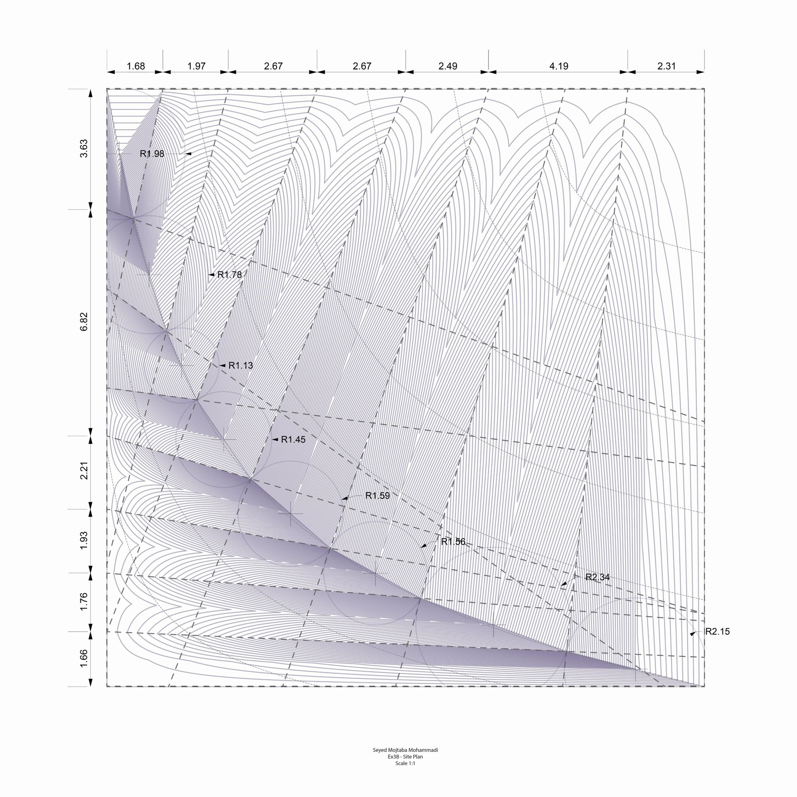
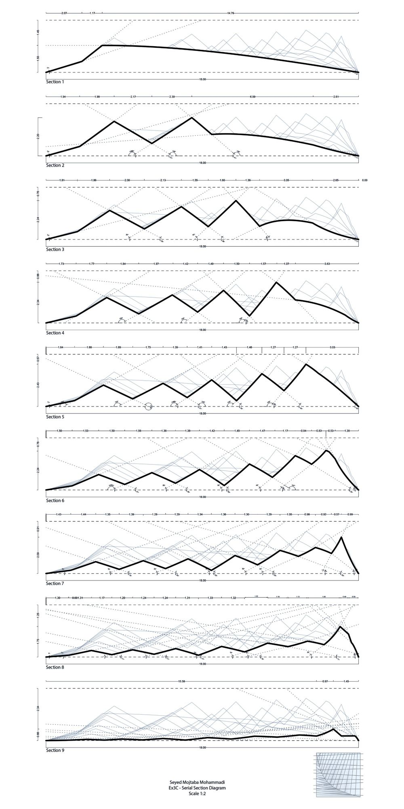
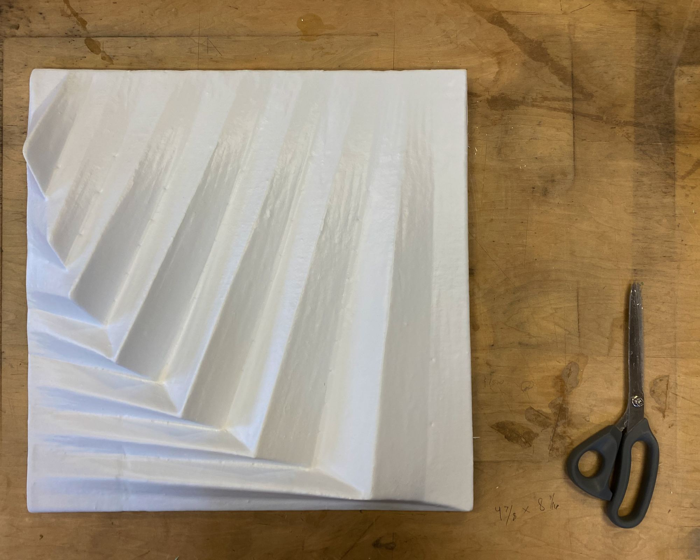
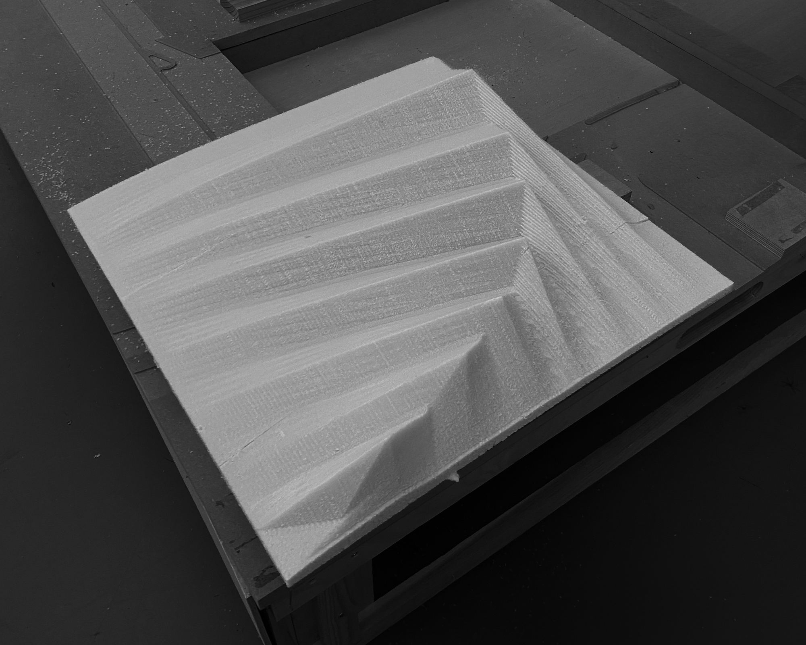
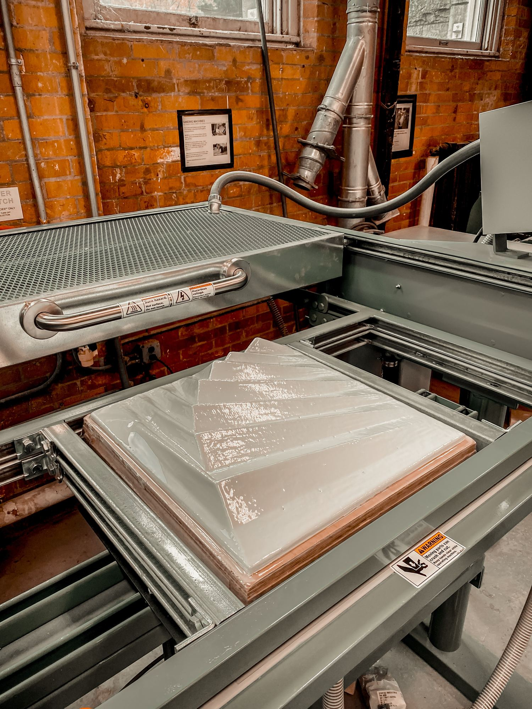
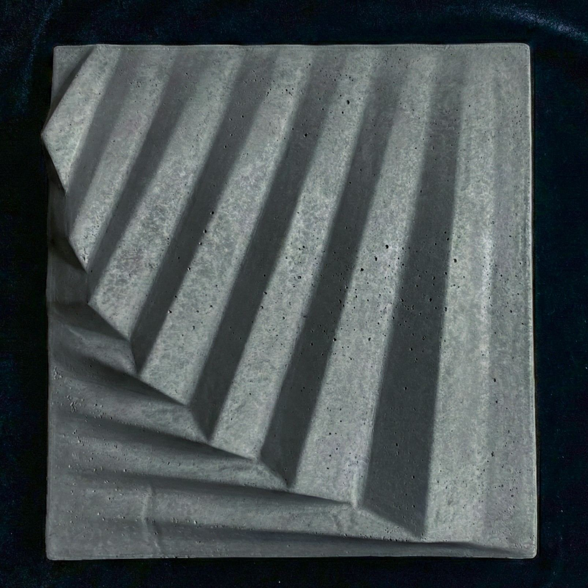

Projects / 07
Endemic Architecture
Media I: reading Bolles + Wilson through drawing and analysis
Media I treated drawing and modelling as tools of analysis. Part 3C studied the work of Bolles + Wilson and their idea of an endemic architecture: buildings that grow out of the particular conditions of their place.
Design
The reading was translated into line studies and sections, and the lines were folded into paper models, each fold recording a change in the drawing.
Details
The studies end in a cast model: the folded paper becomes a mould, and the drawing becomes a surface of light and shadow.
Drawing as analysis
Media I treated drawing and modelling as tools of analysis. Part 3C studied the work of Bolles + Wilson and their idea of an endemic architecture, buildings that grow out of the particular conditions of their place, and translated it into line studies, sections and folded paper models.


Folded paper and cast models
Line studies after Bolles + Wilson; folding the paper models; the cast model.




Process
The study starts from the work of Bolles + Wilson. Their buildings were traced in line studies and sections, folded into paper models, vacuum-formed and finally cast. Each step translates the drawing into a new material and keeps what survives the translation.